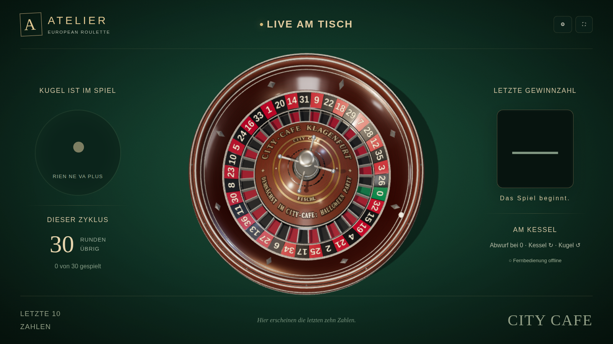
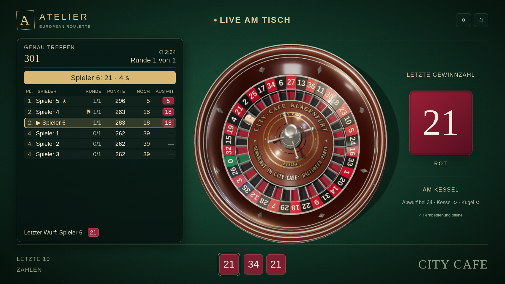
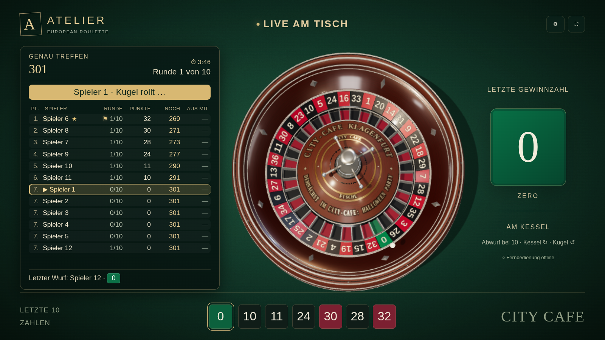
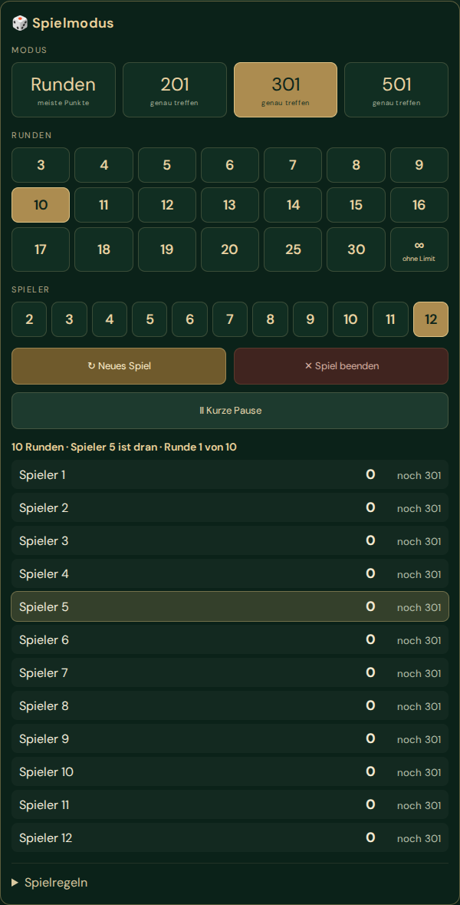
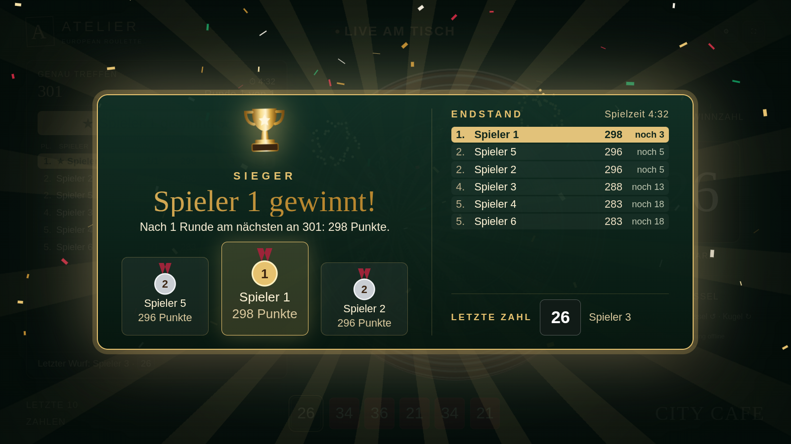

Ein echter Kessel, eine Tafel, die live mitzählt – und am Ende wird gefeiert. Bald geht’s los – dann jederzeit spielbar.

LIVE AM TV21 mm Durchmesser, 8,7 g – eine Turnierkugel wie in modernen Casinos. Früher aus Elfenbein, heute aus Kunststoff.
Kessel und Kugel drehen gegeneinander. Das macht die Kugel über dem Kessel schnell und unberechenbar. Die Richtung wechselt bei jedem Wurf.
8 Metallrauten auf der Laufbahn, abwechselnd längs und quer. Fällt die Kugel, prallt sie daran ab – jeder Lauf endet anders.
Jede Zahl bestimmt ein kryptografischer Zufallsgenerator. Die Kugel rollt dazu physikalisch berechnet – niemand kann eingreifen.
Sag an der Bar Bescheid – 2 bis 12 Leute, die Partie startet sofort. Wer beginnt, lost der Computer aus.
Der Computer wirft die Kugel reihum für jeden. Reines Glück – niemand greift ein, auch wir nicht.
Die Tafel zählt live mit. Wer am Ende vorne liegt, steht ganz oben auf dem Podest.

LIVE-TABELLE| Pl. 3 | Spieler | Runde 4 | Punkte 5 | Noch | Aus mit 6 |
|---|---|---|---|---|---|
| 1. | Spieler 3 ★ | ⚑7/10 | 284 | 17 | 17 |
| 2. | ▶ Spieler 2 | 6/10 | 269 | 32 | 32 |
| 3. | Spieler 4 | 6/10 | 251 | 50 | — |
| 4. | Spieler 1 | 6/10 | 233 | 68 | — |
Bei „Runden“ steht statt „Noch“ der Abstand zum Führenden – statt „Aus mit“ gibt’s keine Zielzahl.
Nur wer exakt auf das Ziel kommt, macht aus. Führt eine Zahl darüber hinaus, zählt sie nicht – überworfen.
Macht jemand aus, wird die Runde trotzdem zu Ende gespielt. Schaffen es mehrere in derselben Runde, teilen sie sich den Sieg.
Dauert es zu lange, endet die Partie nach dem Limit (3 bis 30 Runden oder ohne Limit). Dann gewinnt, wer am nächsten am Ziel ist.
Alle auf einer Tafel – live sortiert nach Punkten. Wer vorne liegt, bekommt den Stern, wer dran ist, die goldene Zeile.

12 SPIELER

SIEGEREHRUNGDer Sieger steht in der Mitte, dazu Endstand und letzte Zahl – das ganze Lokal sieht’s auf dem Schirm. Drei Minuten Ruhm, garantiert.
Wer holt sich den Titel? Sobald es losgeht: einfach an der Bar melden.
Bald geht’s los – dann jederzeit startklar!